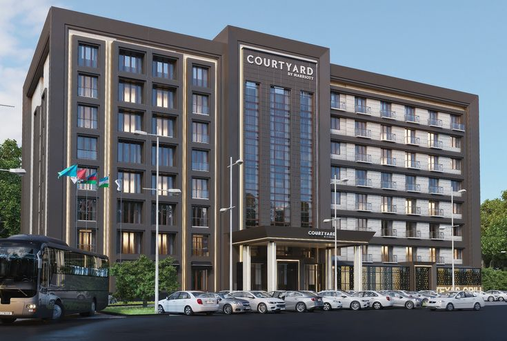
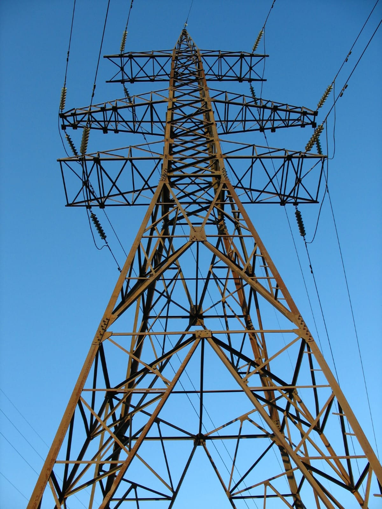
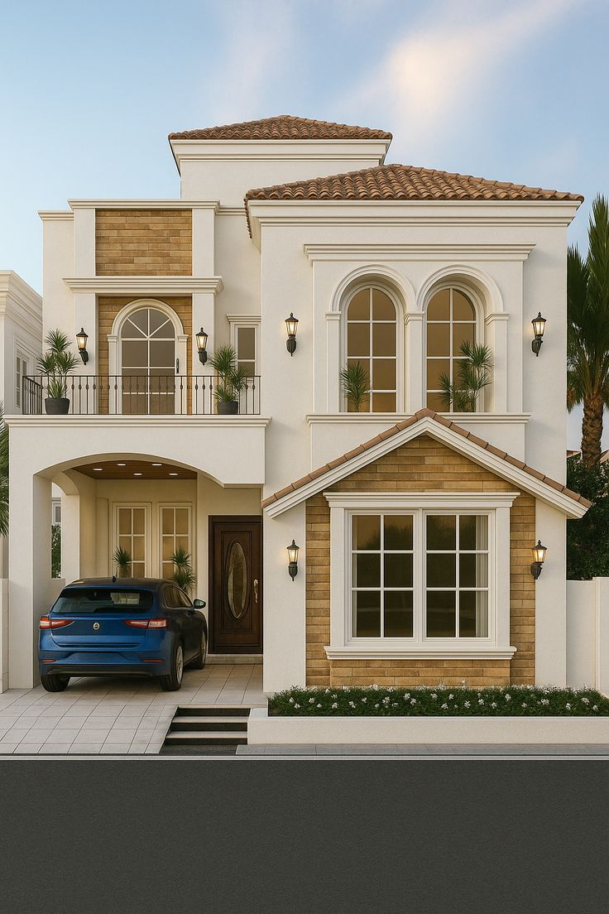

Experienced Civil Engineer specializing in building design, structural analysis, and transmission line projects. Expert in Revit, AutoCAD, and PLS-CADD.

Structural design using Revit & AutoCAD.

PLS-CADD based tower and line design.

Modern house planning & 3D modeling.
Email: tahirbuttengr@gmail.com
Phone: +92-301-4241490
WhatsApp Me